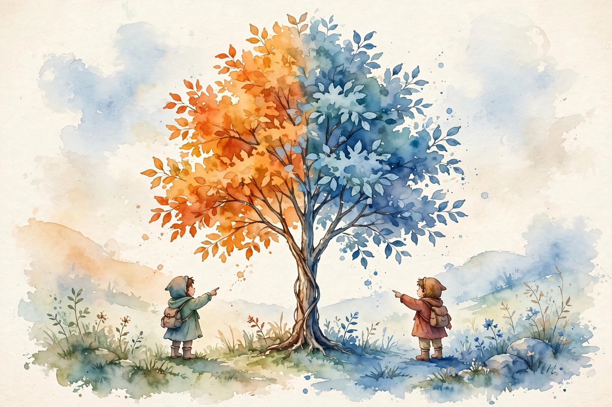

You Are Not So Smart · Episode 062 · Interactive Companion
Naive Realism
Lee Ross explains why each of us feels like the objective one. You see the world as it is. They see it through bias. This companion walks the full interview, from the sweet spot trick to the move Frederick Douglass used to hold both grounds at once.
← Track index · Episode chapter →

Illustration. Watercolor-style image generated for this page. Two figures see one tree in two colors. Not a photograph.
The Wisdom Index: every nugget in this companion
Part 1
The Prediction That Should Unsettle You
SOURCERoss opens his book The Wisest One in the Room, written with Tom Gilovich, with a prediction about the reader. He predicts that McRaney thinks of himself as exactly as liberal as is reasonable. People to his left run too idealistic. People to his right run too callous and selfish. That puts McRaney in the sweet spot: as reasonable as possible.
SOURCERoss defends the trick with one line: “If you thought that it was sensible to be more idealistic than you are now, you would be more idealistic.” Wherever you stand, you stand there because it feels like the reasonable place. The position does not produce the feeling of reasonableness. The feeling produces the position.
SOURCEHe used to run the trick in class. Students named a favorite animal, a favorite color, and a horoscope sign. Then he told them their politics. The answers never mattered. The form never changed: you sit exactly where reason sits, and the rest go too far.
INTERPRETATIONThe unsettling part is the fit. The profile fits anyone, because it describes the feeling of standing somewhere, not the content of the stand. If a description of your politics would fit your worst enemy too, it explains nothing.
Nugget
The sweet spot
What happened. SOURCERoss predicts every reader lands exactly where reason sits, with deviations marked too far in both directions.
Why it matters. INTERPRETATIONThe feeling of reasonableness follows the position. It does not cause it.
The principle. INTERPRETATIONWhen a profile of your views would fit anyone, discard it as evidence.
Part 2
Naive Realism, Defined
SOURCERoss defines naive realism as the conviction that we see the world in an objective, essentially unmediated way. Our experience maps one to one onto reality. From this follows an expectation: other reasonable people will share our view. When they do not, the thing to explain is them. They must be ignorant, self interested, or shaped by a distorting culture. The constant never moves: we are the objective ones.
SOURCEThe feeling has a physical root. What we experience is the interaction between the stuff we are made of and the stuff out there. The world looks red because of the eyes we have. People say the dog is color blind, as if the dog misses the real colors. Nobody says the dog smells the world as it is while we walk around odor blind. We grant ourselves the objective seat in every sense but smell.
SOURCEThe trouble starts where shared hardware ends. Ross points at an oak tree and names it, and the listener agrees. Shared receptors make that judgment safe. But calling someone a bigot can mean very different things to two speakers, while it feels exactly like naming the oak tree. Naive realism cannot tell the two feelings apart.
SOURCEThe blind spot has a name from Emily Pronin, once a student of Ross. We see bias in everyone except ourselves. We grant that experience shaped us, then read our shaping as enlightenment and theirs as contamination. Ross gives the sharp corollary: the more objective a news source becomes, the more biased it looks to both sides. Gray looks like betrayal to black and to white alike.
One event, two verdicts
Hover any bar for detail. The event never changes. The reader changes.
Source: Ross interview, ep062, via the track chapter. Original toy chart built from episode claims.
INTERPRETATIONThe too test operationalizes this. When you catch yourself thinking a thing is too loud, too spicy, or too extreme, stop and ask: too far from what? The answer is always your own setting. That does not settle who is right. It exposes the hidden premise.
Nugget
The too test
What happened. SOURCERoss shows the word too smuggles in the speaker's calibration as the correct setting.
Why it matters. INTERPRETATIONEvery too hides a from what. Naming it breaks the spell of objectivity.
The principle. INTERPRETATIONTally your toos for three days. Each one marks your groove, not the world.
Part 3
The Bucket-of-Facts Fallacy
SOURCEBecause we believe our views arrived through careful contact with reality, we treat the disagreeing person as broken and fixable. The fix: pour in the missing facts. In practice this means pasting a stack of links into their feed, confident that any reasonable person will read them and converge.
SOURCERoss brings 40 years of conflict work, in Northern Ireland and between Israelis and Palestinians, as the empirical answer. Well meaning people on each side want to meet the other side. Why? To explain how things really are. In 40 years he never met anyone who wanted the meeting because they thought they had things wrong.
SOURCEThe lab version: Ross, Charles Lord and Mark Lepper showed supporters and opponents of capital punishment the same two studies, one for each side. Both groups rated the agreeing study as better done. Both groups left more convinced than they arrived. Same evidence in, more certainty out, on both sides at once.
Same studies in, more certainty out
Hover any bar for detail. The evidence never changes. The certainty does.
Source: Ross interview, ep062, via the track chapter. Original toy chart built from episode claims. Bar heights are illustrative of direction, not measured values.
SOURCERoss adds that this is not pure irrationality. Weighting prior beliefs is how minds make sense of the world. The scientific method contributes one rule: you may interpret data through your beliefs, but you may not then test your beliefs on the data you just interpreted. That single prohibition is what saves science from confirmation bias.
INTERPRETATIONThe practical kill: ban link pasting in one live argument for two weeks. Replace each link with one question about the other person's ground. Facts without the disconfirmation rule are fuel, not water.
Nugget
The bucket of facts
What happened. SOURCEForty years of fieldwork, zero minds changed by fact delivery. The lab agrees: same studies, both sides harden.
Why it matters. INTERPRETATIONDisagreement is not a fact shortage. It is a construction difference.
The principle. INTERPRETATIONTrade the bucket for the disconfirmation rule. Ask what would change your mind, then look.
Part 4
What Actually Works
SOURCERoss reverses the goal. If you approach someone to pull them to your side, expect disappointment. If you approach hoping they change your views, hoping to feel out the shape of your own ignorance, you are almost guaranteed to get something valuable.
SOURCEHis exercise rejects the walk in their shoes metaphor, because naive realism means you cannot. Instead, grant the authenticity of their values, then hunt for shared fundamentals under the policy fight. In Ireland, unionists and nationalists fought over policy, converged on what communities should look like, and fully agreed on what family life should be. Ask about the picture, not the policy.
SOURCEThe historical model is Frederick Douglass at the Lincoln memorial dedication. Douglass said plainly that Lincoln was slow and hesitant on abolition. Then he added: given the forces Lincoln faced, it is hard to imagine him doing otherwise, and history shows him swift and sure. One mind holding both grounds. That double hold is the skill.
Every time a hypothesis fails, I gain 15 IQ points.
Daniel Kahneman, as quoted by Ross in the interview
SOURCERoss ties naive realism to time through the end of history illusion: at every age, people feel they reached their final, most accurate self. At 20 he saw a march toward enlightenment with himself in step. Older, he sees a pendulum and himself as balanced. The content inverted. The feeling of arrival never moved.
INTERPRETATIONThe Douglass move, written for a technical dispute: state their design from their ground in two sentences, then yours from yours. Send nothing until both sentences exist. Then ask Kahneman's question: what failed prediction did this argument just hand you, and what are your 15 points worth?
Nugget
The Douglass move
What happened. SOURCEDouglass judged Lincoln slow from abolitionist ground, then swift from Lincoln's ground, and held both.
Why it matters. INTERPRETATIONThe double hold breaks the monopoly of your own construction without surrendering judgment.
The principle. INTERPRETATIONWrite both grounds before you reply. Try to be changed, not to convert.